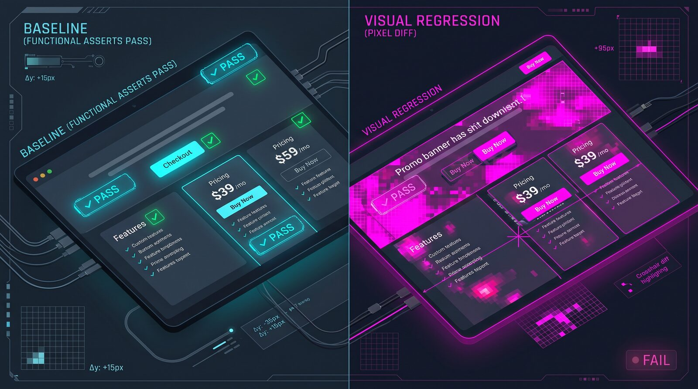

Visual Regression Testing: Catching the UI Bugs Your Functional Tests Walk Right Past
Why pixel-level checks catch layout bugs functional tests miss, how to stop them from flaking, and which tools actually fit your pipeline.
A functional test clicks the "Checkout" button and asserts the next page loaded. It passes. What it doesn't know is that the button is now half-covered by a promo banner that shifted down six pixels after a CSS change, and a real user on a laptop screen would have to guess where to click. Functional and end-to-end tests check that elements exist, respond to events, and the right data shows up. None of that tells you whether the page actually looks right. That gap is what visual regression testing is for, and it's worth understanding both what it catches and how teams make it reliable enough to trust.

What it actually checks
Visual regression testing takes a screenshot of a page or component, compares it pixel-by-pixel (or, increasingly, with an AI-assisted diff) against a stored baseline, and flags anything that changed. It doesn't know what the page is supposed to do; it only knows what the page is supposed to look like.
Imagine a team shipping a pricing page redesign. Their Playwright end-to-end suite still passes: the "Buy now" button is present, clickable, and still navigates to the right URL in the DOM. But a flexbox change in a shared layout component pushed the button two rows down on screens narrower than 768px, so on mobile it now sits underneath a feature list instead of next to the price. No functional assertion fails, because nothing is structurally broken — the button is still there and still works. A visual diff against the mobile baseline catches it immediately, because the screenshot simply looks different.
A minimal Playwright visual check for that page might look like this:
import { test, expect } from '@playwright/test';
test('pricing page layout, mobile viewport', async ({ page }) => {
await page.setViewportSize({ width: 375, height: 812 });
await page.goto('/pricing');
// Stabilize before capturing
await page.evaluate(() => document.fonts.ready);
await page.locator('[data-testid="promo-banner"]').evaluate(
el => el.style.animation = 'none'
);
await expect(page).toHaveScreenshot('pricing-mobile.png', {
mask: [page.locator('[data-testid="live-visitor-count"]')],
maxDiffPixelRatio: 0.01,
});
});The mask option blacks out an element that's expected to change on every run (a visitor counter, a timestamp), and maxDiffPixelRatio sets how much pixel drift is tolerable before the test fails.
Where teams go wrong, and the fixes
The single biggest reason teams abandon visual testing isn't that it's useless — it's that it becomes noisy. A test suite that cries wolf on every run trains people to ignore it, which defeats the purpose. The common causes, and what actually fixes them:
- Late-loading web fonts shift text and line-wrapping between runs. Wait on
document.fonts.readybefore capturing, and make sure fonts are actually served (not 404ing) in CI. - Animations and transitions get caught mid-frame — spinners, carets, fades. Disable CSS animations and transitions for the test environment rather than hoping the timing lines up.
- Images that haven't finished decoding, or
srcsetpicking a different asset on different runs, change pixels without any real bug. Wait for images to report complete, and trigger lazy-loaded content deliberately before capturing. - Dynamic content — live counters, relative timestamps, randomized ordering — needs masking, a frozen clock, or seeded test data, not a wider tolerance threshold.
- Platform rendering differences. Anti-aliasing, font rasterization, and even scrollbar width differ between macOS, Linux, and Windows (classic scrollbars eat roughly 15px of layout that macOS overlay scrollbars don't). Generate every baseline in one canonical environment, typically the same container image CI uses, never on a developer's laptop.
A structural pitfall sits above all of these: visual tests are expensive to maintain. Every intentional design change requires someone to review and re-approve a batch of diffs, and if that review turns into rubber-stamping ("yeah, looks fine, approve all"), baselines drift and the whole check becomes decorative.
AI-assisted tools like Percy's diff classifier or Applitools' match levels reduce the number of diffs a human has to look at by labeling likely-intentional changes separately from likely bugs, but that convenience is a vendor claim, not a guarantee — a classifier that's too eager to label noise as "expected" will quietly hide a genuinely non-deterministic pipeline instead of forcing you to fix it.
Cost is the other real limit: cloud-rendering tools like Percy and Applitools bill per screenshot or per plan tier, which adds up fast once you're covering every page at every breakpoint, while open-source options like Playwright's built-in toHaveScreenshot, Argos, or BackstopJS are free but give you less cross-browser rendering and no built-in review workflow.
Visual regression testing is also the wrong tool for checking that data is correct, that a workflow completes, or that an API returns the right payload — it only tells you the pixels changed, not why, and a passing visual test says nothing about whether the page actually functions.
What to do next
- Start with one high-traffic flow, not the whole site — a checkout page, a pricing page, or a dashboard that breaks visibly and often. Trying to snapshot everything on day one is how teams end up drowning in diffs and giving up within a month.
- Stabilize before you snapshot. Freeze the clock, disable animations, wait for fonts and images, and mask anything genuinely dynamic. Fix determinism at the source rather than widening the diff tolerance to compensate.
- Generate baselines in CI, not locally. Rendering differs enough across operating systems and GPUs that a baseline captured on someone's laptop will produce false failures for everyone else.
- Set tolerance per screenshot, not globally, and treat every diff review as a real decision — a few minutes of looking at what changed, not a reflexive "approve all" to unblock a merge.
Sources
Funkcionalni test klikne na dugme „Checkout" i provjeri da se sljedeća stranica učitala. Test prolazi. Ono što ne zna jeste da je dugme sada do pola prekriveno promo banerom koji se nakon izmjene u CSS-u pomjerio šest piksela naniže, pa bi stvaran korisnik na ekranu laptopa morao da pogađa gdje da klikne. Funkcionalni i end-to-end testovi provjeravaju da elementi postoje, da reaguju na događaje i da se prikazuju pravi podaci. Ništa od toga vam ne govori da li stranica zaista izgleda kako treba. Upravo tu rupu popunjava vizuelno regresiono testiranje, i vrijedi razumjeti i šta ono hvata i kako ga timovi čine dovoljno pouzdanim da mu se može vjerovati.
Šta zapravo provjerava
Vizuelno regresiono testiranje napravi snimak ekrana stranice ili komponente, uporedi ga piksel po piksel (ili, sve češće, uz pomoć AI-ja) sa sačuvanom osnovnom verzijom (baseline) i označi sve što se promijenilo. Ne zna šta stranica treba da radi; zna samo kako treba da izgleda.
Zamislite tim koji objavljuje redizajn stranice sa cijenama. Njihov Playwright end-to-end paket testova i dalje prolazi: dugme „Buy now" postoji, može se kliknuti i u DOM-u i dalje vodi na pravi URL. Ali izmjena flexbox-a u zajedničkoj komponenti za raspored spustila je dugme dva reda niže na ekranima užim od 768px, pa se na mobilnom sada nalazi ispod liste funkcionalnosti umjesto pored cijene. Nijedna funkcionalna provjera ne pada, jer ništa nije strukturno pokvareno — dugme je i dalje tu i i dalje radi. Vizuelni diff u odnosu na mobilni baseline to odmah uhvati, jer snimak ekrana jednostavno izgleda drugačije.
Minimalna vizuelna provjera u Playwright-u za tu stranicu mogla bi da izgleda ovako:
import { test, expect } from '@playwright/test';
test('pricing page layout, mobile viewport', async ({ page }) => {
await page.setViewportSize({ width: 375, height: 812 });
await page.goto('/pricing');
// Stabilize before capturing
await page.evaluate(() => document.fonts.ready);
await page.locator('[data-testid="promo-banner"]').evaluate(
el => el.style.animation = 'none'
);
await expect(page).toHaveScreenshot('pricing-mobile.png', {
mask: [page.locator('[data-testid="live-visitor-count"]')],
maxDiffPixelRatio: 0.01,
});
});Opcija mask zacrni element za koji se očekuje da će se mijenjati pri svakom pokretanju (brojač posjetilaca, vremenska oznaka), a maxDiffPixelRatio određuje koliko odstupanje u pikselima je prihvatljivo prije nego što test padne.
Gdje timovi griješe i kako to popraviti
Najveći razlog zbog kojeg timovi odustaju od vizuelnog testiranja nije to što je beskorisno — nego to što postane bučno. Paket testova koji pri svakom pokretanju diže lažnu uzbunu navikne ljude da ga ignorišu, čime gubi svaki smisao. Najčešći uzroci i ono što ih zaista rješava:
- Web fontovi koji se kasno učitaju pomjeraju tekst i prelamanje redova između pokretanja. Prije snimanja sačekajte
document.fonts.readyi provjerite da se fontovi u CI-ju zaista serviraju (a ne vraćaju 404). - Animacije i tranzicije budu uhvaćene usred kadra — spineri, kursori, fade efekti. Isključite CSS animacije i tranzicije u test okruženju, umjesto da se nadate da će se tajming poklopiti.
- Slike koje još nisu dekodirane, ili
srcsetkoji pri različitim pokretanjima izabere drugi fajl, mijenjaju piksele bez ikakvog stvarnog baga. Sačekajte da slike prijave da su učitane i namjerno pokrenite lazy-loaded sadržaj prije snimanja. - Dinamički sadržaj — brojači uživo, relativne vremenske oznake, nasumičan redoslijed — zahtijeva maskiranje, zamrznut sat ili test podatke sa fiksnim seed-om, a ne veći prag tolerancije.
- Razlike u renderovanju između platformi. Anti-aliasing, rasterizacija fontova, pa čak i širina scrollbara razlikuju se između macOS-a, Linuxa i Windowsa (klasični scrollbarovi pojedu otprilike 15px rasporeda koje macOS overlay scrollbarovi ne zauzimaju). Svaki baseline generišite u jednom kanonskom okruženju, obično istoj container slici koju koristi CI, a nikada na laptopu nekog developera.
Iznad svih ovih problema stoji jedna strukturna zamka: vizuelni testovi su skupi za održavanje. Svaka namjerna izmjena dizajna zahtijeva da neko pregleda i ponovo odobri gomilu diffova, a ako se taj pregled pretvori u mehaničko odobravanje („da, izgleda okej, odobri sve"), baseline-ovi se postepeno udaljavaju od stvarnosti i cijela provjera postaje ukras.
Alati zasnovani na AI-ju, kao što su Percy-jev klasifikator diffova ili Applitools-ovi nivoi poklapanja (match levels), smanjuju broj diffova koje čovjek mora da pregleda tako što vjerovatno namjerne izmjene označavaju odvojeno od vjerovatnih bagova. Ali ta pogodnost je tvrdnja proizvođača, a ne garancija — klasifikator koji previše olako označava šum kao „očekivan" tiho će sakriti zaista nedeterministički pipeline, umjesto da vas natjera da ga popravite.
Druga stvarna granica je cijena: alati koji renderuju u oblaku, poput Percy-ja i Applitools-a, naplaćuju po snimku ekrana ili po nivou paketa, što brzo raste kada pokrivate svaku stranicu na svakom breakpointu. Open-source opcije poput Playwright-ovog ugrađenog toHaveScreenshot, Argosa ili BackstopJS-a su besplatne, ali nude slabije renderovanje u više pretraživača i nemaju ugrađen proces za pregled izmjena.
Vizuelno regresiono testiranje je takođe pogrešan alat za provjeru da li su podaci tačni, da li se neki tok uspješno završava ili da li API vraća pravi odgovor — ono vam govori samo da su se pikseli promijenili, a ne zašto, i test koji vizuelno prolazi ne govori ništa o tome da li stranica zaista funkcioniše.
Šta dalje
- Počnite sa jednim tokom sa velikim saobraćajem, a ne sa cijelim sajtom — stranicom za checkout, stranicom sa cijenama ili dashboardom koji se vidljivo i često kvari. Pokušaj da se već prvog dana snimi sve je upravo način na koji se timovi udave u diffovima i odustanu u roku od mjesec dana.
- Stabilizujte prije snimanja. Zamrznite sat, isključite animacije, sačekajte fontove i slike i maskirajte sve što je zaista dinamično. Determinizam popravite na izvoru, umjesto da kompenzujete povećanjem tolerancije za diff.
- Baseline-ove generišite u CI-ju, a ne lokalno. Renderovanje se dovoljno razlikuje između operativnih sistema i grafičkih kartica da će baseline snimljen na nečijem laptopu svima ostalima davati lažne padove.
- Toleranciju podesite za svaki snimak posebno, a ne globalno, i svaki pregled diffa tretirajte kao stvarnu odluku — nekoliko minuta gledanja šta se promijenilo, a ne refleksno „odobri sve" samo da bi se odblokirao merge.